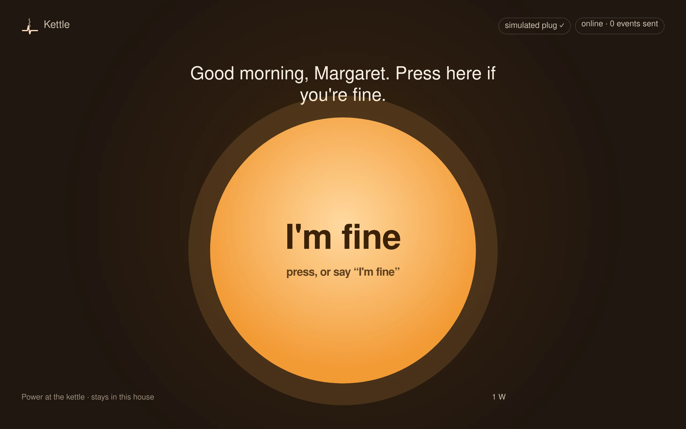
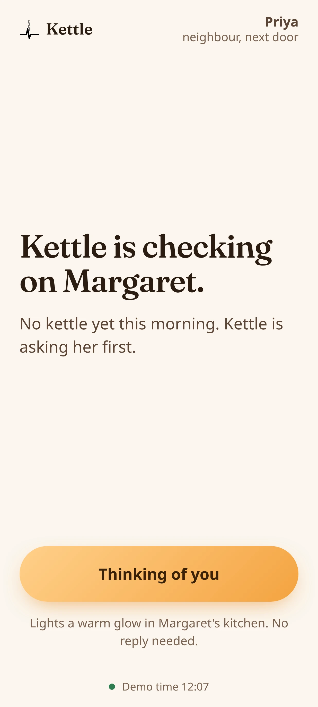
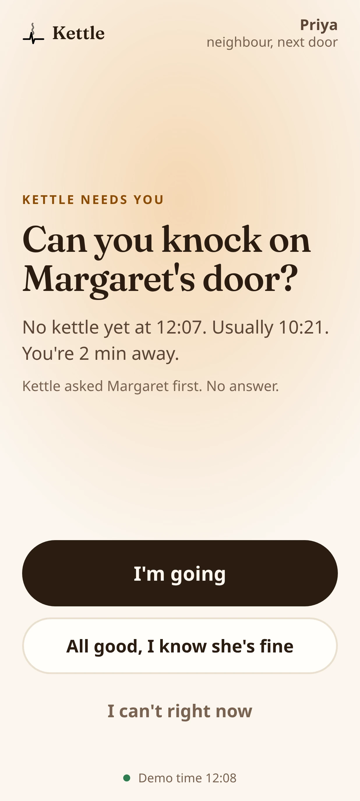
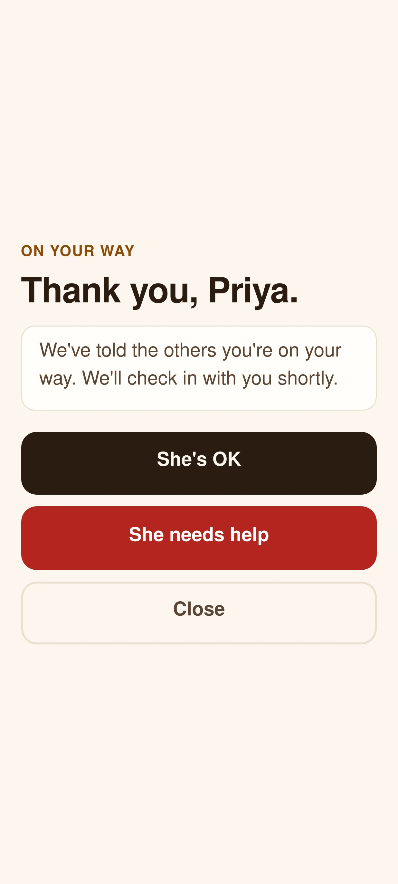
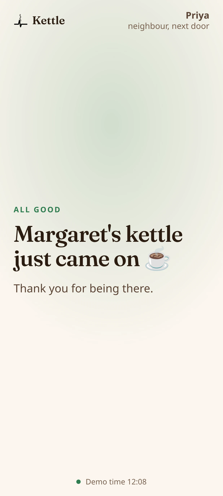
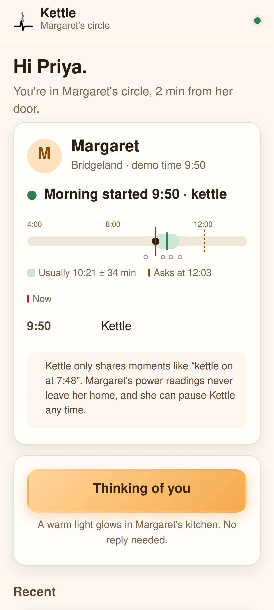
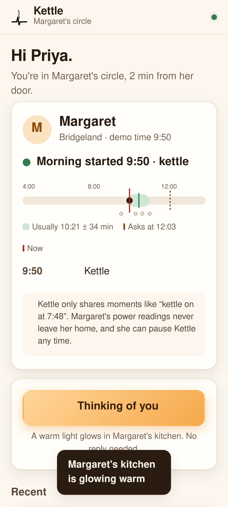
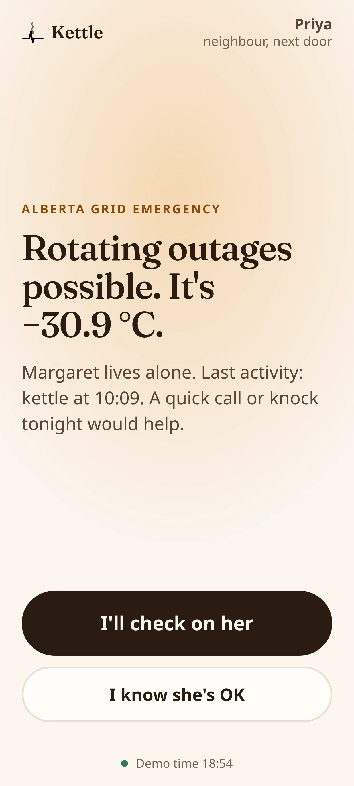
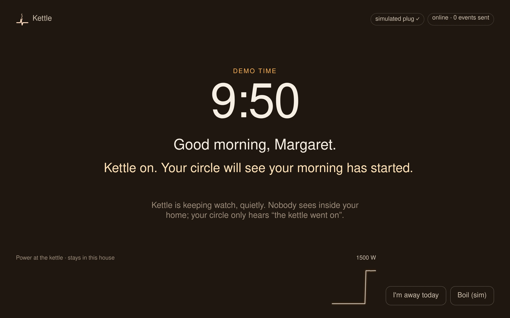
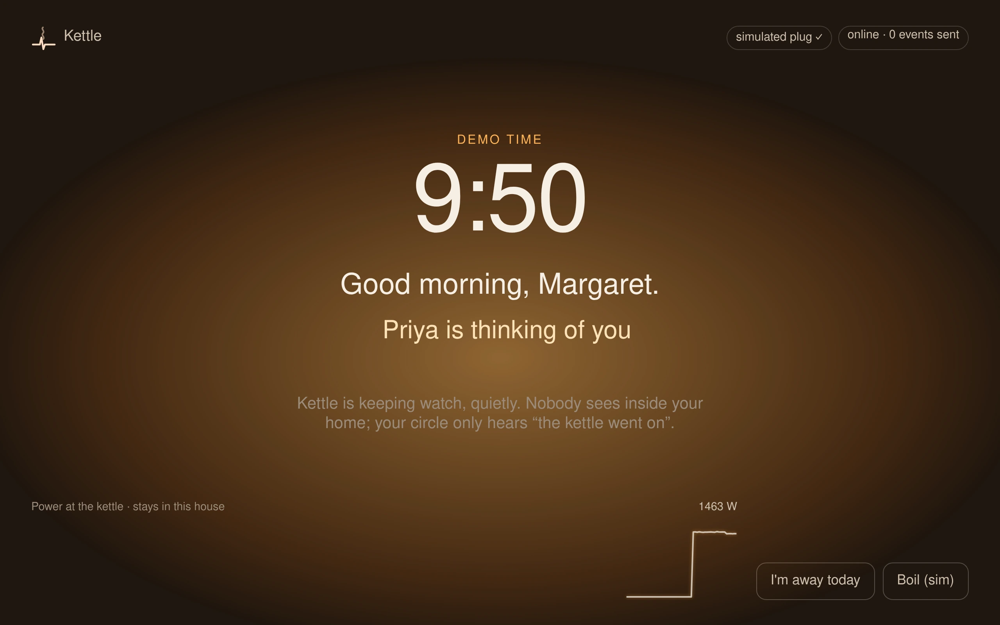

22 real days in one real single-person home · REFIT House 11
of Canadians aged 85 and over live alone.
Statistics Canada · 2021 Census
When people over 90 fell alone and couldn’t get up,
8 times in 10, they didn’t use their alarm.
Fleming & Brayne · BMJ 2008 · people aged 90 and over
Wear it.
Press it.
Kettle needs nothing from her.
$25 smart plug
Kettle hub
Raw readings stay in the house
Only moments leave
No kettle by 12:07. Usually 10:21.








Margaret’s kitchen · live
kettle on


Built for Alberta winters.
Saturday, January 13, 2024 · Calgary
Calgary Int’l Airport, 6 PM · Environment Canada
AESO pool price, $/MWh · hour by hour
at the $999.99 price cap
6:44 PM. Every phone in Alberta buzzed.
Check on Margaret.
AESO · Environment and Climate Change Canada · Power Advisory, “January 2024 Supply Shortfall in Alberta”
Replayed through the same detector and rhythm code
REFIT · Murray, Stankovic & Stankovic, Scientific Data (2017) · CC BY 4.0
Japan
Zojirushi’s i-Pot has emailed families when an elderly parent uses their hot-water pot.
Every Calgary home already has a meter.
Margaret, Priya and Tom are personas. Margaret’s routine is a real single-person home from the REFIT dataset (House 11). Product screens are the real Kettle app; demo time is accelerated. Kettle is not a medical device or an emergency service.
Sources: Statistics Canada · Fleming & Brayne, BMJ 2008 · AESO · Environment and Climate Change Canada · REFIT (CC BY 4.0) · Zojirushi. Built with AI assistance. Voice: Gemini TTS. Music: Lyria.